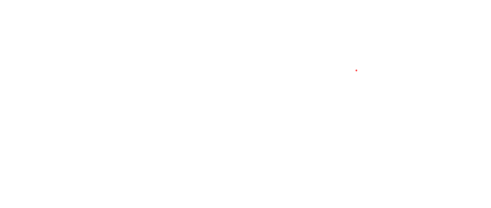

Delaney O'Kray-Murphy · GAME 251 · Spring 2026
Six projects. Six ideas.

GAME 251 is a course about game design ideas and discussions, covering how to pitch, document, and present original game concepts across a range of formats and constraints. Each project had a specific design focus: core dynamics, investor pitches, puzzle mechanics, chance, serious games, and fast-paced Twitch-style play.
Some of my favorites came early in the semester, when I got to develop ideas I had already been thinking about for a while and finally had a reason to actually put them on paper. The later projects pushed me to come up with new concepts more quickly and work within tighter constraints, which was a different kind of fun.
I really enjoyed the visual side of all of it, making presentations look good and trying to communicate ideas in a way that felt appealing. I'm proud of a lot of what's here and I'm excited to have somewhere to share it. Enjoy and have fun looking around.
PROJECT 01
Wake up alone in space. Figure out what happened before the ship takes you with it.
This assignment asked us to build a game concept around a core dynamic. I chose survival, specifically the tension of managing limited resources in a hostile environment with no memory of how you got there.
Voidbound is a space survival game where you wake up with amnesia aboard a deteriorating ship drifting through deep space. The core loop is about surviving by scavenging for oxygen and resources, while slowly piecing together the mystery of what happened to the crew. The idea of surviving to discover, rather than surviving to escape, is what drives it forward.
This one is one of my favorites from the semester. I really like how it came out. If I were to go back I'd probably try to add more original doodles and sketches, but overall I'm happy with it as is.
PROJECT 02
Catch fish that don't exist yet. Draw them into being.
This assignment was a game pitch aimed at a potential investor. The goal was to sell an original concept clearly and compellingly, identifying the market, the hook, and the vision.
TideBound is a fishing game where every fish you catch has no appearance until you bring it back and draw it yourself. Players go around catching fish and then build out a personal aquarium filled with their own illustrations. The concept leans into the viral potential of streamers and content creators, since every player's aquarium is unique and shareable.
This is probably my strongest idea from the semester overall. If I were to develop it more I'd define the world better and add some kind of backstory or in-universe magic to explain why the fish have no appearance until you catch and draw them. It feels like it deserves more of a mythology behind it.
PROJECT 03
A dungeon that builds itself as you descend.
Assignment 3 called for a puzzle game design. The puzzle element needed to be central to the mechanics and not just decorative, so I built it around riddle cards as a discovery mechanic woven into the dungeon structure.
Delve is a board game where players explore a dungeon that gets constructed as you play. It's designed as a bard game where the deeper you go, the more the dungeon reveals itself through drawn cards, riddles, and encounters. I talked through a lot of the design with my family which helped me work through the ideas, and I put the full game design document together in Canva which was a lot of fun.
I'm really happy with how this one came together. The Canva layout felt polished and the riddle card mechanic covers the puzzle requirement in a way that feels natural to the dungeon theme. I don't think I'd change much about it.
PROJECT 04
Draw lines, roll dice, claim the map. But you built the map.
This assignment focused on games of chance. The challenge was designing something where luck plays a meaningful role without completely eliminating skill.
Dot Zone is a territory game inspired by the classic dots-and-boxes game you'd draw on paper in school. Here, players design the map themselves before play even starts, choosing where the dots go and how the board is laid out. Then each turn, players roll dice to determine how many lines they get to draw. So it's a mix of spatial strategy and luck: you can plan things out, but you can't control what you roll.
It's a fun concept and it works, but looking back I think I'd go for a larger scope. The dice mechanic feels like it could support more complex territory rules or even team play. It was a fun thing to try and I think there's more to explore with it.
PROJECT 05
A trivia game about corporate malfeasance. Learn something. Be horrified.
Assignment 5 called for a serious game, meaning educational. The goal was to design something that actually informs or teaches players about a real-world topic through gameplay.
Corporate Jeopardy is a Jeopardy-style trivia game built around corporate malfeasance: the scandals, cover-ups, and ethically questionable decisions made by major corporations. Players answer questions across categories and learn about real cases as they play. It's fully playable as an HTML game.
I like this one but I think given more time I would have spent it finding weirder and funnier examples to include in the question bank. There's a lot of strange corporate behavior out there and I think leaning more into that would have made it more interesting and fun to play through.
PROJECT 06
Connect 4, but the board resets to the music. And so do you.
The final assignment was a Twitch challenge game, so something fast-paced, high-energy, and built for a streaming audience where chaos and skill can coexist.
Connect to the Beat takes Connect 4 and syncs it to music. Players drop pieces on the beat and only on the beat. When the board fills it resets and play continues until the song ends. Scoring is based on performance across the whole song: how many connections you made, when you dropped pieces relative to the beat, and how consistently you stayed in rhythm. Some songs will naturally be harder to play to than others, but that's kind of the point. There's a natural skill ceiling to work toward and hopefully the pursuit of that is enjoyable on its own.
I'm really proud of this one. The rhythm mechanic gives it its own identity that feels separate from both Connect 4 and standard rhythm games. Syncing strategy to music is a genuinely interesting challenge and I think it's the kind of thing people would want to keep coming back to and get better at.
Conclusion
Honestly I took this class mostly just to have something to do and get something checked off, and it ended up being genuinely one of the more enjoyable things I've done. There's something nice about being required to have ideas. It creates a kind of pressure that actually gets things out of your head and onto a page.
I'm proud of a lot of what's in here. Voidbound was something I had been thinking about for a while and it felt good to finally put it together. TideBound is probably the strongest concept overall and the one I think has the most potential. Delve was fun to work through with my family. And Connect to the Beat is the one I keep thinking about in terms of what a finished version would actually feel like to play.
I didn't expect to enjoy the presentation and visual side of it as much as I did. Making things look good and feel considered was something that came naturally and that I want to keep doing.
Whether any of these ever become real games or apps or something else, I hope they show that the thinking behind them was real. Thanks for looking.